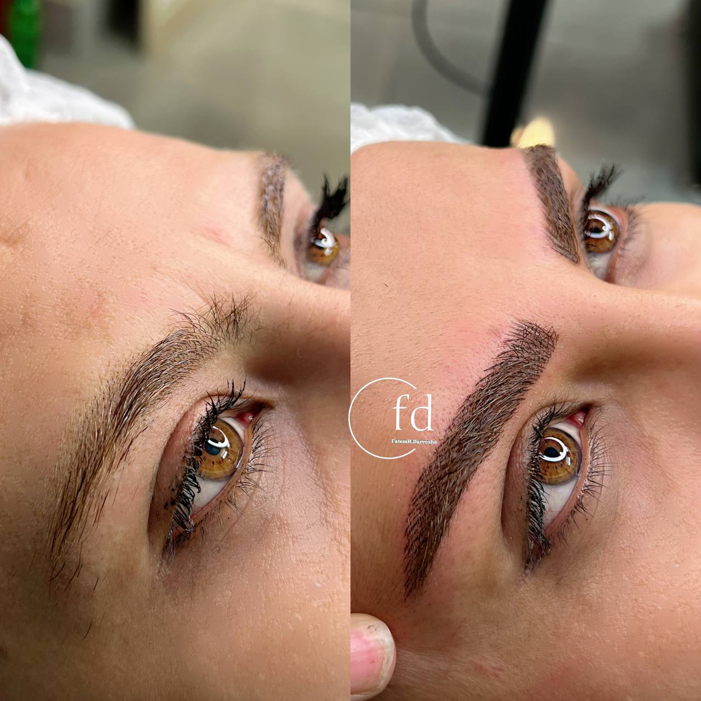

کاشت ابرو بهتر است یا میکروبلیدینگ؟ (راهنمای کامل ۱۴۰۴)
نوشته شده در تاریخ ۲۵ تیر ۱۴۰۴ - توسط: م. اشرفی
اگر از ابروهای کمپشت خود خسته شدهاید و به دنبال راهی برای داشتن ابروهایی زیبا و پرپشت هستید، احتمالاً در دوراهی انتخاب بین **کاشت ابرو** و **میکروبلیدینگ (یا فیبروز)** قرار گرفتهاید. هر دو روش طرفداران خاص خود را دارند، اما تفاوتهای اساسی آنها باعث میشود هر کدام برای افراد خاصی مناسب باشند. در این راهنمای جامع، یک بار برای همیشه این دو روش را مقایسه میکنیم تا شما بتوانید آگاهانه تصمیم بگیرید.
کاشت ابرو چیست؟ (روشی دائمی و تهاجمی)
کاشت ابرو یک **عمل جراحی سرپایی** است. در این روش، پزشک متخصص فولیکولهای مو را (معمولاً از پشت سر) برداشته و آنها را در ناحیه ابرو پیوند میزند. موهای کاشته شده مانند موی طبیعی رشد میکنند و نیاز به اصلاح و کوتاهی منظم دارند. این روش یک راه حل **دائمی** برای افرادی است که دچار ریزش شدید ابرو شدهاند.
مزایای کاشت ابرو
- نتیجه کاملاً دائمی
- ظاهر طبیعی (چون از موی واقعی استفاده میشود)
- مناسب برای پوشش کامل نواحی بدون مو
معایب کاشت ابرو
- هزینه اولیه بسیار بالا
- یک عمل جراحی با دوره نقاهت
- نیاز به اصلاح و کوتاهی مداوم ابروها
- عدم کنترل کامل روی ظرافت و خواب مو
میکروبلیدینگ چیست؟ (روشی نیمهدائمی و هنرمندانه)
میکروبلیدینگ یک تکنیک **آرایش نیمهدائم** است که در آن پیگمنتر با استفاده از یک قلم دستی، خطوطی بسیار ظریف شبیه به تار مو را در لایههای سطحی پوست ایجاد میکند. هدف اصلی این روش، اصلاح فرم، قرینهسازی و پر کردن جاهای خالی ابرو به طبیعیترین شکل ممکن است. این روش نیازی به جراحی ندارد و نتیجه آن بین ۱ تا ۲ سال ماندگاری دارد.
مزایای میکروبلیدینگ
- هزینه اولیه بسیار مناسبتر
- بدون نیاز به جراحی و دوره نقاهت
- کنترل کامل روی ظرافت و طراحی مدل ابرو
- نتیجه بسیار طبیعی و هنرمندانه
معایب میکروبلیدینگ
- نتیجه نیمهدائمی است
- نیاز به ترمیم سالانه برای حفظ زیبایی
- برای پوستهای خیلی چرب ماندگاری کمتری دارد
جدول مقایسه نهایی: کاشت ابرو در مقابل میکروبلیدینگ
| ویژگی | کاشت ابرو | میکروبلیدینگ (فیبروز) |
|---|---|---|
| ماهیت روش | جراحی و دائمی | آرایشی و نیمهدائمی |
| هزینه | بسیار بالا | مقرونبهصرفه |
| ماندگاری | دائمی | ۱ تا ۲ سال |
| دوره نقاهت | دارد (چند روز) | ندارد (فقط مراقبت اولیه) |
| مناسب برای | ریزش شدید و کامل ابرو | اصلاح فرم و پر کردن نواحی خالی |
نتیجهگیری: بالاخره کدام را انتخاب کنم؟
پاسخ این سوال به هدف و شرایط شما بستگی دارد:
- اگر به دلیل بیماری یا ژنتیک، **ابروهای خود را به طور کامل از دست دادهاید** و به دنبال یک راه حل دائمی هستید، **کاشت ابرو** میتواند گزینه مناسبی باشد.
- اما اگر ابروهای شما فقط **کمپشت، نامتقارن یا بیحالت** هستند و میخواهید با یک روش هنرمندانه، کمهزینه و بدون جراحی، به ابروهایی بینقص و طبیعی برسید، **میکروبلیدینگ یا فیبروز** بدون شک بهترین و هوشمندانهترین انتخاب برای شماست.
در نهایت، یک جلسه مشاوره با یک متخصص میتواند به شما کمک کند تا با بررسی دقیق شرایطتان، بهترین تصمیم را بگیرید.